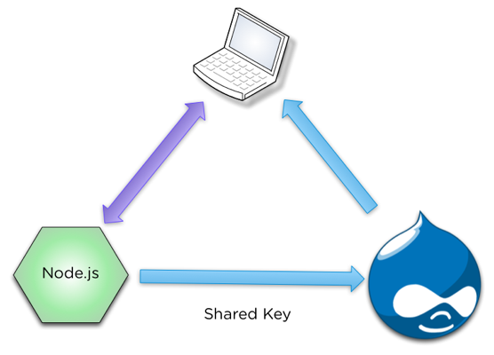

Integrating node.js
for real-time awesomesauce
i.e. 4k ♥'s node.js
Elliott Foster
Michal Minecki
Ian Carrico
What we'll go over.
- Pubsub Stuff
- Drupo Poetry
- Live Video Commenting
PubSubHubbub
Hub

SRSLY, what's up with that crazy name?
- RSS feeds don't necessarily get updated very frequently.
- As a provider it's undesirable to have consumers generating load when there's no new content.
- The solution: PubSub!
- Notifies subscribers when new content comes in, so they don't need to keep checking.
The need
- N Drupal sites.
- Need to consume X data feeds that didn't natively support PubSub.
- (where N approaches 100 and X approaches 300).
Wait, Drupal supports polling feeds, right?
- Yes! And in fact it's pretty good at it.
- BUT, these feeds were time sensitive.
- It was unrealistic to have a Drupal process continuously running to do the polling.
Ok, so what'd you do?
- Augmented the RSS feeds with node.js to support PubSub.
- Node took care of the polling and implemented the PubSub protocol so the feeds module would "just work".
- Deployed the node code in the joyent cloud, separate from the Drupal installations.
The result
- Almost indiscernible load on the node server.
- Load is only generated on the Drupal servers when there's actually work to do.
- Drupal is able to transparently subscribe to the node hub with the feeds module (i.e. Drupal devs don't need to know or care how the node code is working as long as it's up).
PubSub questions?

Drupal Poetry
Responsive Application Development with Drupal and Backbone
Drupal Poetry
One codebase to rule them all.Desktop

Tablet

Mobile


Drupal Admin

Why We Built it
- Have fun. (Built on 20% time)
- Work with hipster technolgies.
- See if Responsive works for Applications.
Technologies

Front-end JS:
Backbone.js and Underscore
- Backbone
- Lightweight framework for creating web applications
- Almost a MVC
- Underscore
- Set of utility functions that make working with JavaScript less insane.
Backbone.js and Underscore
- Backbone
- Lightweight framework for creating web applications
- Almost a MVC
- Underscore
- Set of utility functions that make working with JavaScript less insane.
require.js
- requirejs.org
- JavaScript file and module loader.
- Simplifies code reuse on client and server.
- Includes build/optimization tools.
Node.js
- nodejs.org
- Server side JavaScript platform.
- Built on Google Chrome's V8 JavaScript engine.
- Event-driven, non-blocking.
MongoDB
- mongodb.org
- NoSQL database/document store.
- Objects stored in BSON (very similar to JSON).
- Schemaless design.
Drupal
- drupal.org
- Fully baked administration workflow
- Easy to connect to using services module
- Lots of stuff "out of the box"
- Todd said we had to
CSS Display Dictates JavaScript Behavior
- Don't need to worry about differences in browser JavaScript APIs.
- It's fast!
(function($) {
// ...
var barVisible = $('#word-bar').is(':visible');
var listingsVisible = $('#listings').is(':visible');
// ...
}(jQuery));
Duck Punch, Learn to Love It
- Proxy touch events to mouse events: jQuery-ui touch punch
- touch == click
- resize == orientation change
(function($) {
// ...
var supportsOrientationChange = "onorientationchange" in window;
var orientationEvent = supportsOrientationChange ? "orientationchange" : "resize";
// Reset barVisible on orientation changes.
var dispatch = _.clone(Backbone.Events);
window.addEventListener(
orientationEvent,
function() {
barVisible = $('#word-bar').is(':visible');
listingsVisible = $('#listings').is(':visible');
dispatch.trigger('orientationChange');
},
false
);
// ...
}(jQuery));
Architecture

Poem life cycle
Fresh Page
- Nginx serves the HTML.
- Backbone.js requests the cached taxonomy terms to populate the word libraries.
- User starts to put words in the work area.
- All changes are stored in the browser memory.
- User clicks share.
Saving a Poem
- Poem is saved.
- If there is no Session: Session is lazy created by Node.js and stored in Browser Local storage.
- Poem is saved as a json object directly in MongoDB by Node.js.
- Permalink is created by Node.js from the MongoDB hash and sent to browser.
- Reference to Poem is asynchronously saved in Drupal using services. (Send some other data with it but we feel bad about that.)
- Drupal responds with NID.
- Node.js Updates the MongoDB document with the the NID.
Fun stuff.
- User is encouraged to login with Twitter OAuth and/or tweet it.
- If they don't login and don't clear cache they can come back and edit.
- Now it gets interesting.
- Moving the words saves the new poem in MongoDB. Autosave!
- Same anon user can edit poems without login.
- Users can "fork" poems. Use someone else's poem as a starting point.
Autosave Workflow
Actual

Better

questions
Drupo Questions?
EEERRRRR MMERRRRE GERD VERDERO KERMENTING
What we did
The Need
- A live event with viewers across the globe
- Needed live-feed of all participants thoughts to be shared
- As we were using a live video, we could not have any page refreshing
Why not Drupal's AJAX?
It's slow, we needed this real-time.
The Solution
- Had a second server that was running Node.js with socket.io.
- Each user had a Drupal form that would submit a discussion node with their thoughts, thus saving the new node in Drupal.
- The node.js server pinged the Drupal server every 10-15 seconds and grabbed a JSON object with all new discussions
- Node.js would then push out all the new discussions to all users with socket.io, and update any formatting
- The client would receive the new nodes in a JSON object, display it on their feed.
The Effect
- Real-time data was easily shared for every user.
- Minimal Drupal interface, while still keeping all data within Drupal.
- Single page for all video, discussions, etc. to allow all users to fully interact.
- All pages work fully on a variety of devices.
The Nerdy Stuff
The Future
- Setup comment history, so that they video can be replayed with the video at another date.
- Include some sort of voting API work, so that we can have live voting an analytics with the discussions
- Move the handing of new comments and discussion to Node.js, within reason.
Fork us on GitHub!